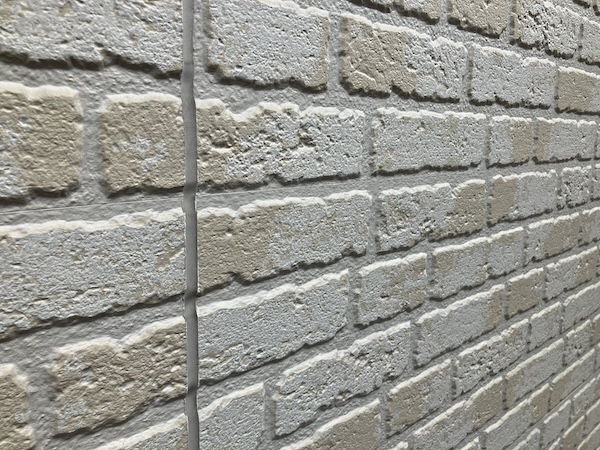
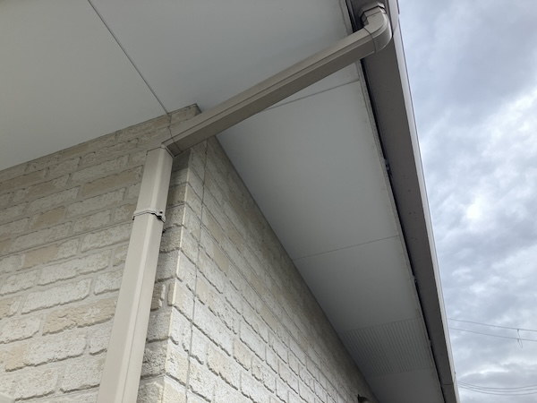
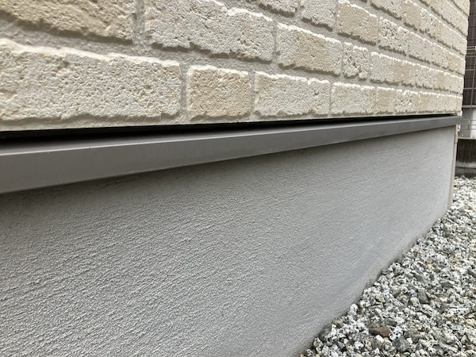
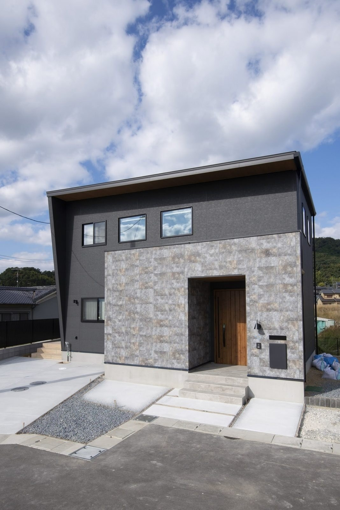

「築10年なので、そろそろ外壁の塗り替えですよね？」——よく聞かれます。一般的にも「外壁は10年で塗り替え」と言われます。でも、お引き渡しから10年経ったお家を実際に点検で回っている立場から、正直に言います。10年は、早いことが多いです。
築10年のお家を、点検で見てきました
先日、10年点検にお邪魔してきました。写真を見てください。10年間、雨ざらし・日ざらしだった外壁と基礎です。



ご覧のとおり、壁そのものは10年でもまだ十分きれいです。もちろん立地や方角で差はありますが、「10年経ったから塗り替え」が全員に当てはまるわけではありません。
先に傷むのは、壁ではなく「コーキング」です
外壁で最初に年月が出るのは、板と板のつなぎ目を埋めているゴム状の目地——コーキング（シーリング）です。新築のときは指で押すと沈むくらい弾力がありますが、年月とともに固くなり、痩せて、やがて切れ目が入ります。
ここが切れると、そこから雨水が入るようになります。つまり、「外壁の手入れ」の主役は塗装より先にコーキング。点検で見るのも、まずここです。
では、何年目がベストなのでしょうか
周辺環境（前の道路、日当たり、風の抜け方、軒の深さ）で傷み方は変わるので、一律には言えません。そのうえで、点検で多くのお家を見てきた実感としては——
大事なのは「何年」で決めることではなく、見てから決めること。当社が定期点検（3ヶ月・6ヶ月・1年・2年・5年・10年〜）を続けているのは、この判断をお客様と一緒にするためです。
築10年前後は、訪問営業が増える時期です。「近くで工事をしていて、お宅の外壁が気になった」「今なら足場代が無料」——この誘い文句で、まだ必要のない塗装をしてしまうケースを本当によく聞きます。まだもつ壁を塗るのは、前倒しでお金を払っただけ。迷ったら、建てた工務店に見せてから決めてください。当社のお客様なら、点検のついでに一緒に見ます。
よくあるご質問
サイディングでも塗り替えは必要ですか？
いずれ必要になります。ただ、当社の標準のKMEW「光セラ」16mmは表面に汚れを分解して雨で流す仕組みが入っており、色あせ・汚れの進みがゆっくりです。そのぶん塗り替えの時期を後ろに延ばせます。

コーキングだけ先に直すことはできますか？
できます。部分的な打ち替えなら足場なしで済む場所もあります。切れているのに塗装まで待つ必要はないので、点検で見つけたら早めにお声がけします。
築10年で何もしなくて大丈夫？
「何もしない」ではなく「見て、記録しておく」が正解です。10年点検で外壁・コーキング・基礎の状態を確認しておけば、次の一手を焦らず決められます。よそで建てられた方も、外壁のことで迷ったら一度ご相談ください。

奈良の工務店シバ・サンホームで、初めての家づくりに伴走しています。お金のことこそ正直に。モットーはスピード・誠実さ・楽しさ。